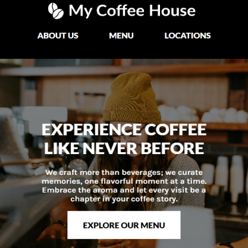

The iTunes icon was reimagined in 2024 for an application called LionSphere Connect, which marked Apple’s bold return to music-centric innovation. This app was designed to merge streaming, music management, and social sharing into one cohesive platform. The new icon featured a sleek, stylized lion head within a glowing sphere, symbolizing leadership, connectivity, and the enduring power of music. Released alongside a suite of updates to Apple’s digital ecosystem, LionSphere Connect aimed to redefine the way users interacted with their favorite media.
This project showcases a website I designed and developed for "My Coffee House," a fictional coffee shop concept. The site features a warm, inviting design that reflects the cozy atmosphere of a local coffee shop. It includes a responsive layout, an interactive menu, and sections highlighting the shop's story, signature blends, and community focus. Created with modern web technologies, the project demonstrates my ability to craft engaging and functional websites tailored to brand identities.